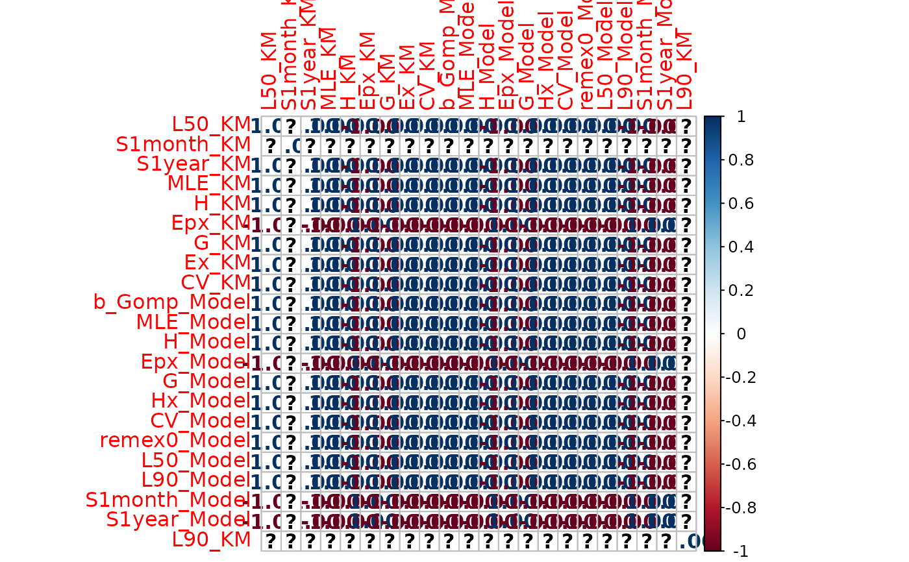

Make_SurFigTab.RdData Papers: Make figures & Tables
Make_SurFigTab(
AnalysisDir,
SaveDir = NA,
namefile = "",
Sections = c("sur", "rep", "gro")
)character directory where to find the analyses results: .Rdata files
character directory where to save summary plots and tables
character Suffix to add to the name of files produced if needed.
vector of character names of the sections: "sur", "rep" and/or "gro".
It saves the plots and tables used in the data papers.
file = system.file("sci_Animal.csv", package = 'ISRverse')
AnalysisDir = dirname(file)
SaveDir = paste0(tempdir(check = TRUE),'/temp')
dir.create(SaveDir)
out <-Make_SurFigTab (AnalysisDir, SaveDir,
Sections = "sur")
#> ℹ Using "','" as decimal and "'.'" as grouping mark. Use `read_delim()` for more control.
#> ℹ Using "','" as decimal and "'.'" as grouping mark. Use `read_delim()` for more control.
#> Warning: No analyses passed all checks, so all analyses are present in plots and tables (instead of none)
#> Warning: Removed 2 rows containing non-finite outside the scale range
#> (`stat_ydensity()`).
#> Warning: Removed 2 rows containing non-finite outside the scale range
#> (`stat_summary()`).

unlink(SaveDir, recursive = TRUE)